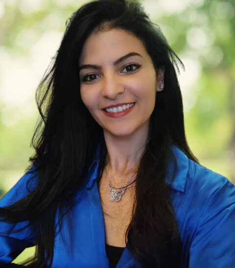

Ingénieure agronome · Chercheuse · CIRAD Montpellier
Dr. Wafa Malik
Azote, eau et agriculture face au changement climatique — de la parcelle au bassin versant.
- Publications
- —
- Collaborateurs
- —
- Pays
- —

01
Recherche
Ma recherche porte sur les impacts des activités agricoles et du changement climatique sur la qualité de l'eau et les processus biogéochimiques de l'azote, à l'échelle de la parcelle et du bassin versant.
J'utilise des modèles de culture et des modèles agro-hydrologiques distribués pour évaluer comment l'usage des terres et les pratiques agricoles influencent la dynamique de l'azote dans les paysages ruraux, sous des scénarios climatiques et agricoles actuels et futurs.
-
Changement climatique
Impacts sur les systèmes agricoles et stratégies d'adaptation.
-
Qualité de l'eau
Évaluation environnementale intégrée, transferts d'azote et eutrophisation.
-
Modélisation
Modèles de culture et hydrologiques, de la parcelle au territoire.
-
Cycle de vie territorial
Analyse du cycle de vie appliquée aux territoires agricoles.
-
Aide à la décision
Outils pour éclairer les politiques publiques et les acteurs du territoire.
Modèles utilisés
- SWAT
- TNT2
- TOPMODEL + STICS
- DSSAT
- MAELIA
02
Publications
Liste complète sur Scholar ↗03
Collaborations
Un réseau de recherche entre l'Europe, le Maghreb et les Amériques.
04
Enseignement & formation
05